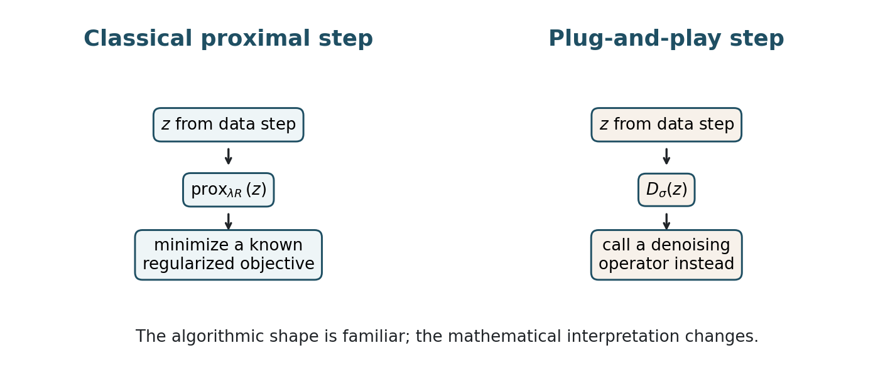
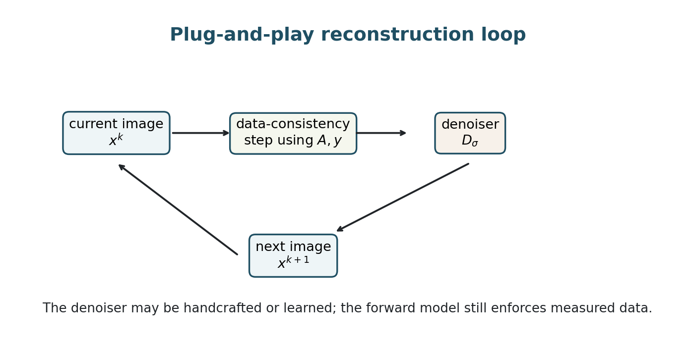
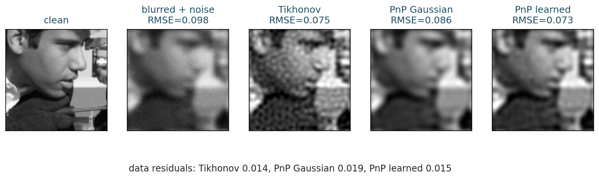
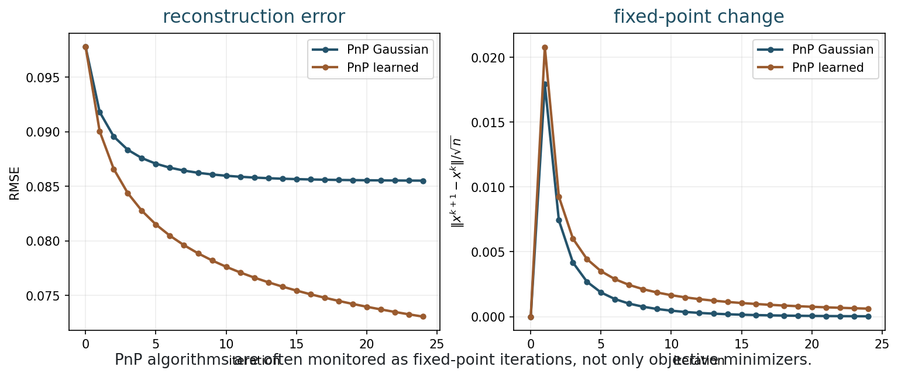
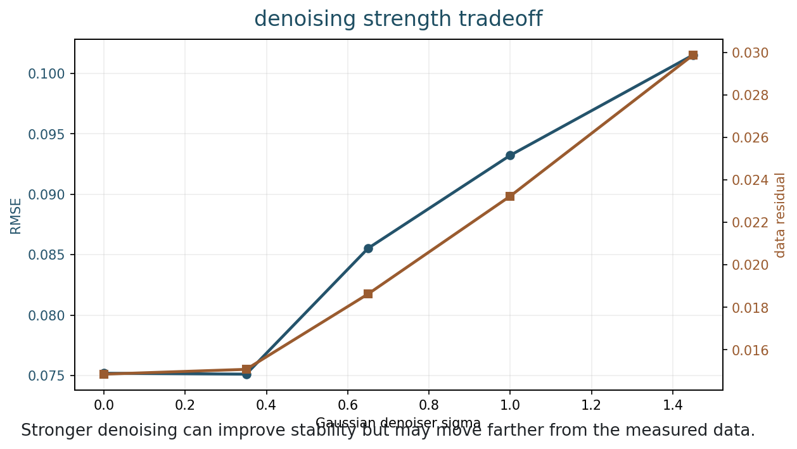
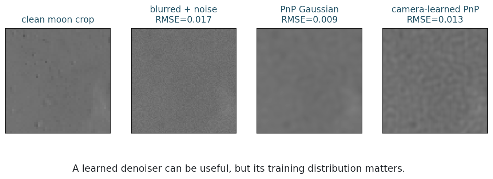

Plug-and-Play and Learned Regularization
Chapter 13
Slides | Notebook | Open in Colab
Learning Goals
By the end of this chapter, you should be able to:
- recall proximal algorithms for regularized inverse problems;
- define plug-and-play reconstruction;
- compare explicit and implicit regularization;
- interpret deblurring examples with handcrafted and learned denoisers;
- discuss fixed points, convergence, and trust.
Can A Denoiser Be A Prior?
Plug-and-play is a hybrid idea. It keeps the measurement model
y \approx Ax
and inserts an image-restoration tool that knows what plausible images look like.
The key question is: where should that image-restoration tool enter the algorithm?
Why This Chapter Matters
Chapter 12 compared explicit model-based reconstruction with data-driven methods. Plug-and-play is the meeting point. It keeps the inverse-problem structure:
y\approx Ax,
but replaces an explicit handcrafted proximal prior with a denoising operator.
This is a beautiful idea because denoising is often easier to learn than full reconstruction. A denoiser learns what clean images tend to look like. Plug-and-play then uses that denoiser inside an algorithm that still knows the forward model.
In other words:
\text{plug-and-play} = \text{data consistency} + \text{denoising prior}.
This makes PnP one of the clearest examples of the course identity: neural or learned tools become most meaningful when we understand the inverse problem they are helping to solve.
PnP is also where the middle and right parts of the course identity meet. Classical variational reconstruction gives an iteration with a data step and a prior step. Neural reconstruction can replace the prior step by a learned denoiser. The forward model still asks for measurement consistency, while the denoiser supplies learned image structure.
This is the most concrete bridge from Chapter 9 to neural imaging. Chapter 9 described an algorithm as an alternation between a data step and a prior step. Plug-and-play keeps the data step recognizable and changes the prior step. The course question becomes:
If a proximal operator behaves like a denoiser, what happens when the denoiser is learned?
Proximal Algorithms
A standard variational model is
\hat{x} = \operatorname*{argmin}_x \frac{1}{2}\|Ax-y\|_2^2+\lambda R(x).
The data term uses the forward model. The regularizer encodes image structure.
For
D(x)=\frac{1}{2}\|Ax-y\|_2^2,
the gradient is
\nabla D(x)=A^\top(Ax-y).
A data-consistency step is
z^k=x^k-\tau A^\top(Ax^k-y).
The proximal operator of R is
\operatorname{prox}_{\lambda R}(z) = \operatorname*{argmin}_x \frac{1}{2}\|x-z\|_2^2+\lambda R(x).
It asks for an image close to z but preferred by the prior R.
The proximal operator can be interpreted as a special kind of denoiser. The input z is an intermediate image that has been pulled toward the data but may contain noise, artifacts, or unstable components. The proximal step returns a cleaner or more regular image according to the prior R.
For example:
- an l1 proximal operator performs soft thresholding;
- a TV proximal operator performs TV denoising;
- a constraint proximal operator projects onto an allowed set.
This interpretation motivates plug-and-play: if a proximal map behaves like a denoiser, can we use a stronger denoiser in its place?
This is one of the most important bridges in the course. It shows that learning does not have to replace the whole inverse-problem pipeline. Learning can enter at the point where classical mathematics already asks for an image-prior operation.
In proximal gradient, the algorithm alternates between two roles:
- move toward the measured data;
- move toward images preferred by the prior.
Plug-and-play keeps this alternation. It simply lets the second role be played by a denoiser that may have been learned from examples. That is why PnP is easier to understand after studying variational methods: it is not a mysterious neural trick, but a modification of a familiar optimization template.
Proximal Gradient
Putting the steps together gives
z^k=x^k-\tau A^\top(Ax^k-y),
x^{k+1} = \operatorname{prox}_{\tau\lambda R}(z^k).
The proximal step receives a corrupted intermediate image z^k and returns a more regular image. This sounds like denoising.

Plug-and-play replaces a proximal map by a denoising operator.
The replacement is simple to write but conceptually deep. In classical proximal gradient, the denoising step corresponds to a known regularizer R. In plug-and-play, the denoiser may not correspond to any explicit R that we can write down.
This gives us a powerful image model, but it changes what we can prove and monitor.
Plug-and-Play Update
Plug-and-play reconstruction uses
z^k=x^k-\tau A^\top(Ax^k-y),
x^{k+1}=D_\sigma(z^k),
where D_\sigma is a denoising operator.

PnP alternates between data consistency and denoising.
The denoiser can be Gaussian smoothing, median filtering, wavelet thresholding, non-local means, a learned neural-network denoiser, or a learned patch prior.
The data-consistency step still uses the forward model A, the adjoint A^\top, the measured data y, and the data term. PnP does not throw away physics; it uses physics between denoising steps.
Reading the update as two alternating forces:
- the gradient step asks the reconstruction to explain the measurement;
- the denoiser step asks the reconstruction to look like a clean image.
The balance between these two forces determines the behavior of the algorithm. If the denoiser dominates, the result can become plausible but inconsistent with the data. If the data term dominates, noise and artifacts may remain.
The data-consistency step is the part that keeps the denoiser honest. The residual
Ax^k-y
measures how the current reconstruction disagrees with the observation. The adjoint action
A^\top(Ax^k-y)
translates that disagreement back into image space. The denoiser then acts on an image that has just been corrected using the measurement.
This is why the order matters. PnP is not “run a neural network and hope.” It is an iterative conversation between measured data and image prior. The forward model keeps asking, “Does this image explain the data?” The denoiser keeps asking, “Does this image look like a plausible clean image?”
Explicit Versus Implicit Prior
In classical proximal gradient, the regularizer R is explicit:
x^{k+1} = \operatorname{prox}_{\tau\lambda R}(z^k).
In plug-and-play,
x^{k+1}=D_\sigma(z^k).
If D_\sigma is not exactly a proximal operator, the iteration may not minimize a known objective. The prior is implicit: it is represented by the behavior of the denoiser.
This gives flexibility, but it changes the theory.
An implicit prior can be very expressive. A modern denoiser may know about textures, edges, repeated patterns, and object-like structures in a way that TV or wavelets do not. But the price is that the prior is harder to inspect.
For a classical prior, we can read the penalty. For a learned denoiser, we often need experiments to understand what it preserves, removes, or invents.
Learned Regularization Views
Hybrid learned methods can be understood in several ways:
- learn a denoiser and use it inside an iterative method;
- learn a regularizer R_\theta(x) and optimize with it;
- learn an unrolled reconstruction algorithm with data-consistency layers.
An explicit learned regularizer has the form
\hat{x} = \operatorname*{argmin}_x D(Ax,y)+\lambda R_\theta(x).
A learned-denoiser form uses
x^{k+1}=D_\theta(z^k).
The denoiser has learned image statistics from training data, so its training distribution matters.
Plug-and-Play, RED, And Unrolling
There are several related ways to combine learning and reconstruction.
Plug-and-play replaces a proximal operator with a denoiser:
x^{k+1}=D_\theta(z^k).
Regularization by denoising, often called RED, tries to build an explicit regularization idea around the denoiser. The details are more advanced than we need here, but the goal is similar: use denoising behavior as image prior information.
Unrolled methods take a fixed number of iterations and turn them into a trainable network. They are often more flexible than classical PnP because the update itself can be trained end-to-end.
The common structure is:
\text{measurement model} + \text{learned image correction}.
That is the main idea students should keep.
Unrolled Networks As Learned Algorithms
Unrolled networks make the connection to neural networks especially visible. Start with an iterative algorithm such as gradient descent, ISTA, ADMM, or a proximal-gradient method. Then fix a number of iterations and replace some operations by trainable modules.
A schematic unrolled reconstruction may look like
x^{k+1} = G_{\theta_k} \left( x^k,\ A^\top(Ax^k-y) \right), \qquad k=0,\ldots,K-1.
This is a neural network because the maps G_{\theta_k} are learned. It is also an inverse-problem algorithm because the forward model still appears through the data-consistency signal. The network does not receive only the image. It receives information about how the current image fails to explain the data.
This gives a useful way to compare direct neural reconstruction and unrolled reconstruction:
| Method | Uses A during reconstruction? | Main risk |
|---|---|---|
| direct map \hat{x}=f_\theta(y) | maybe not | plausible image that ignores measurement physics |
| PnP iteration | yes, through data steps | denoiser may not correspond to an explicit objective |
| unrolled network | yes, if data-consistency layers are included | learned updates may overfit the training setting |
Unrolling is attractive because it can learn richer corrections than a handcrafted proximal step while preserving the structure of an inverse-problem solver. But it still needs the same reliability questions: data consistency, distribution shift, parameter sensitivity, and failure cases.
Deblurring Example
Suppose
y=Ax+\eta
is a blurred and noisy image. We can compare Tikhonov deblurring, plug-and-play with Gaussian denoising, and plug-and-play with a learned PCA patch denoiser.

Different priors create different deblurring behavior.
Tikhonov restores detail but can amplify texture-like noise. Gaussian PnP is stable but can oversmooth. Learned PnP can preserve plausible structure when training and test images match.
When reading this comparison, ask what each prior believes. Tikhonov believes small energy is good. Gaussian denoising believes smoothness is good. A learned patch denoiser believes images should resemble the training patches. The differences in the reconstructions are consequences of those beliefs.
This language is deliberately anthropomorphic, but useful. Each prior has a preference:
- Tikhonov prefers low-energy or smooth solutions;
- TV prefers piecewise smooth images with sharp edges;
- wavelets prefer sparse multiscale coefficients;
- a learned denoiser prefers images similar to its training examples.
The reconstruction is what happens when those preferences meet the measurement. If two methods produce different images from the same data, the difference is not only numerical. It reveals different assumptions about what a plausible image should be.

Iteration curves help diagnose convergence and reconstruction quality in examples where ground truth is known.
Fixed Points
PnP is often analyzed as a fixed-point iteration:
x^\star = D_\sigma\!\left(x^\star-\tau A^\top(Ax^\star-y)\right).
The fixed point balances data consistency with denoiser preference.

Denoising strength controls the tradeoff between stability and fidelity.
If denoising is too weak, noise and inversion artifacts remain. If denoising is too strong, details are removed and the result may move away from measured data.
A fixed point is not automatically the true image. It is an image that the algorithm no longer changes. The data step and denoising step have reached a balance.
This distinction is important. Convergence means the iteration settles. Correctness means the settled image is faithful to the scene and measurements. An algorithm can converge to a biased or hallucinated solution.
Convergence And Trust
For convex R and suitable step size, classical proximal gradient has a clear story:
- it minimizes a known objective;
- objective values can be monitored;
- convergence can be proved under standard assumptions.
For a general denoiser:
- there may be no explicit R;
- there may be no decreasing objective;
- convergence depends on properties of D_\sigma;
- a fixed point may not be a minimizer.
This does not make PnP unusable. It means validation becomes central.
Useful diagnostics include:
- data residual \|Ax^k-y\|;
- fixed-point change \|x^{k+1}-x^k\|;
- reconstruction error when ground truth is available;
- sensitivity to denoiser strength;
- performance under distribution shift;
- visual inspection of task-critical structures.
The goal is to understand not only whether the output looks good, but whether the algorithm is behaving consistently.
Denoiser Strength As Regularization
The denoiser strength plays a role similar to a regularization parameter.
Weak denoising trusts the data-consistency step more and leaves more artifacts. Strong denoising trusts the image prior more and may remove structures that the measurements support.
In plug-and-play, this balance is especially delicate because the denoiser may not correspond to an explicit penalty R(x). The parameter still changes the implicit prior. Therefore it should be swept and reported, just like \lambda in Tikhonov or TV.
When reading PnP results, compare:
- the image quality;
- the data residual;
- the fixed-point change;
- sensitivity to denoiser strength;
- behavior on images outside the denoiser’s training distribution.
Failure Modes

A learned prior can fail when the test image has different statistics from the training images.
When using PnP, ask:
- Is the denoiser stable to small perturbations?
- Does the data residual remain reasonable?
- Does the result change much between iterations?
- Does the method pass tests on out-of-distribution images?
- Does it preserve task-critical structures?
Practical learned imaging should report baseline comparisons, data-consistency errors, sensitivity to denoising strength, robustness to distribution shift, uncertainty when possible, and task-based evaluation.
Reading A PnP Result
When a plug-and-play result is shown, do not ask only which image is prettiest. Ask four questions in order.
- Data support. Does A\hat{x} match y within the expected noise and model error?
- Prior relevance. Was the denoiser trained or chosen for this image family and degradation?
- Algorithm behavior. Does the fixed-point change decrease, and is the result stable to reasonable parameter changes?
- Task reliability. Does the method preserve the structures that matter for the intended use?
These questions prevent a common confusion. A learned denoiser can improve visual quality while also moving the image away from the measured data. Conversely, a reconstruction can have a strong data fit while keeping artifacts that make it unusable. The trustworthy region is where data consistency and prior relevance support the same conclusion.
For project work, a PnP experiment should therefore include at least one simple baseline. A learned method that only beats a poor baseline teaches little. A learned method that beats a reasonable Tikhonov, TV, wavelet, or sparse baseline under fair conditions is much more convincing.
What Students Should Trust
Trust should be earned by evidence, not by method category. A classical method can fail because the model is wrong. A learned method can fail because the training distribution is wrong. A hybrid method can fail because the denoiser and data term are poorly balanced.
For a plug-and-play reconstruction, a reasonable checklist is:
| Question | Why it matters |
|---|---|
| Does A\hat{x} match y within expected noise? | checks measurement consistency |
| Was the denoiser trained on relevant data? | checks prior relevance |
| Does the result change under small perturbations? | checks stability |
| Does it preserve known structures? | checks task reliability |
| Does it outperform simple baselines? | checks practical value |
This is the habit of mind the course aims to build: not “classical good, neural bad” or the reverse, but careful reasoning about what information is measured, what information is assumed, and what evidence supports the reconstruction.
Common Mistakes
A first mistake is to think PnP is just denoising after reconstruction. It is not. The denoiser is inserted inside the reconstruction loop, alternating with data consistency.
A second mistake is to think a stronger denoiser is always better. Strong denoising can erase true structures or pull the image away from the data.
A third mistake is to assume that convergence proves correctness. A fixed point can still be biased, oversmoothed, or distribution-shifted.
A fourth mistake is to report one denoiser strength without showing how sensitive the conclusion is to that choice.
Computation
The Week 13 notebook lets you change denoiser strength, number of PnP iterations, and denoiser type, then compare residuals and reconstruction quality.
Run:
python3 examples/week13_plug_and_play.pyor open the notebook in Colab from the link at the top of this chapter.
In the notebook, compare the data residual and the visual result as denoising strength changes. Look for cases where the image looks cleaner but becomes less faithful to the measured data.
Exercises
- What does a proximal operator do?
- What does plug-and-play replace in proximal gradient?
- Why might PnP not minimize a known objective?
- What is a fixed point of the PnP iteration?
- Give two safeguards for using learned denoisers in high-stakes imaging.
- Explain the difference between convergence of a PnP iteration and correctness of the reconstruction.
- Explain why denoiser strength should be swept like a regularization parameter.
Takeaways
- Plug-and-play keeps the forward model and inserts a denoiser.
- The denoiser acts as an implicit prior.
- Learned denoisers can improve reconstructions when data match training.
- PnP needs careful validation because objective and convergence guarantees change.
- Denoiser strength controls an implicit regularization tradeoff.
- Always check both image quality and consistency with measurements.
- Hybrid learned reconstruction is most trustworthy when data consistency, prior relevance, and robustness are tested together.
- PnP shows learning entering exactly where classical reconstruction already needed prior information.